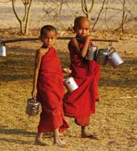
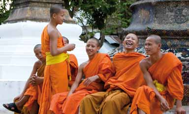
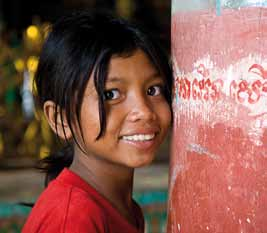
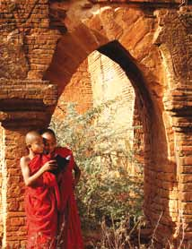
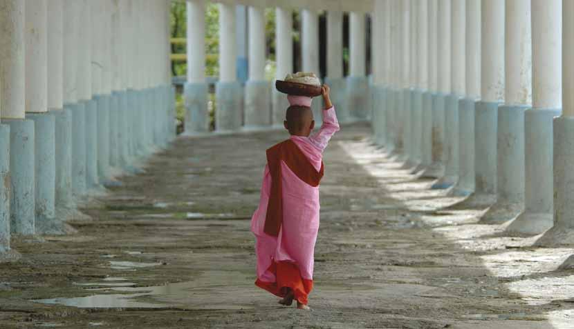

Myanmar har et tropisk monsunklima med tre sæsoner: Fra slutningen af marts til maj er gennemsnits tempera-turen over 30 grader, regntiden fra maj til oktober, hvor den tropiske monsun giver regnfulde, varme og fugtige somre. Og vintrene fra november til marts er mere tørre og har mildere temperaturer mellem 21-28 grader. Den køligste og mest behagelige tid for rejser til Myanmar er fra november til marts.
De fleste burmesere, både kvinder og mænd går til daglig klædt i bluse/skjorte og et saronglignende klædestykke der går ned til anklerne og kaldes longyi. På fødderne bæres lette sandaler, hvilket er praktisk, når man til stadighed skal af og på med fodtøjet i private hjem og under besøg i templer, pagoder og klostre – også i ruiner. Husk altid at tage sko og strømper af, når du besøger religiøse områder.Det er velset, at turister tager hensyn til normerne for påklædning på og nær religiøse steder.
T-shirts, bluser og skjorter bør have (korte) ærmer. Voksne bør undgå at gå rundt i meget korte shorts og undertrøje. Ellers er behovet for påklædning som i troperne: Bukser og overdele i bomuld, en sweater til kølige morgener og aftener i højlandet (i de-cember og januar måske til og med en jakke), og gode sko eller sandaler. Behagelige flip-flap san-daler kan købes for en billig penge efter ankomst.
En hat eller kasket er nødvendigt midt på dagen, og man bør medbringe solcreme, myggebalsam og en lommelygte. VISUM Der er visumpligt til Myanmar. Visum skal søges elektronisk inden rejsen. Du skal søge dit visum ca. en måned inden afrejse, og det koster 50 USD. Inden du kan ansøge om visum, får du en vejledning af os samt en række informationer, som du skal bruge for at kunne udfylde formularen.
Der er mulighed for at benytte sin danske mobil hele Asien. Dog skal man være opmærksom på de høje roaming takster, som er tilknyttet ens danske abonnement, når den bruges i udlandet. Der er fem timers tidsforskel mellem Danmark og Myanmar, dvs. når kl. er 12 i Danmark er den 17 i Myanmar.
er svært at forstå for mange danskere, og de fleste vil helst bare have det inkluderet i prisen. Vores holdning er dog, at drikkepenge skal være et udtryk for jeres tilfredshed, og derfor skal de betales sidst på rejsen til jeres lokale guide og til jeres chauffør. Som tommelfingerregel 5 USD pr dag til guide og chauffør. Alle vores guider aflønnes af vores samarbejdspartner, der lønmæssigt tilbyder guiderne en god løn, der sikrer, at vi kan få de dygtigste lokalguider. Men i Myanmar er en væsentlig del af guidernes løn drikkepenge fra gæsterne. Som partner har vi desværre ikke indflydelse på dette.
Der findes ATM hæveautomater i Yangon og Mandalay. Man kan generelt endnu ikke benytte VISA kort eller andre kreditkort som betalingsmiddel, men tiderne ændrer sig og det bliver mere og mere udbredt at kunne bruge hævekort. Det anbefales at medbringe rejsevaluta i kontanter, i US-dollars, der nemmest lader sig veksle til den lokale valuta, Kyat. Myanmar er et billigt rejseland. Et måltid mad på restaurant kan fås for 30-50 kr. GEOGRAFI Myanmar ligger i Sydøstasien afgrænset af Andamanerhavet og Den bengalske Bugt. Myanmars grænse er 1.930 km lang og støder op mod både Bangladesh, Kina, Indien, Laos og Thailand.
Landets placering har stor strategisk værdi, da Myanmar ligger tæt på de store skibsruter i det indiske ocean. Myanmar ligger mellem den tibetanske højslette og den malaysiske halvø og byder på en utrolig smuk natur. Mellem bjergene, som omgiver landet i både øst, vest og nord, løber floderne Ayeyarwady, Sittang og Salween, hvorfra der udgår mange mindre floder. Myanmar er derfor meget rig på vand og har et af verdens bedste områder for risdyrkning.

I dag er mere end to tredjedele af landets regnskove væk, men tidligere var Myanmar dækket af skov og havde en fantastisk fauna med blandt andet tigre, elefanter, aber og andre tropiske dyrearter. Myanmar er rig på naturressourcer, frodige jorde og et betydeligt fiskerierhverv. Dertil kommer forekomster af ædelstene, teaktræ, olie og naturgas.